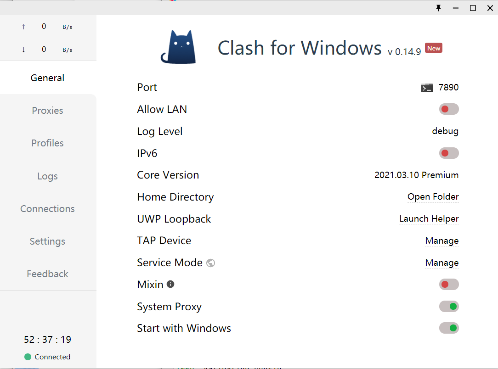

github-push
科学上网的同时，push代码到github时不时会提示失败无法连接仓库
以下操作可以在idea下的Terminal执行
1 代理查询
查看是否存在代理地址（一般都是空的）
1 | git config --global http.proxy |
2 取消代理
如果在第一步查询存在代理地址，但是地址不对，要先将代理进行删除，再进行后续的重新添加
1 | git config --global --unset http.proxy |
3 重新设置代理
笔者的梯子软件用的是Clash for Windowss
可以看到代理端口是 7890

1 | git config --global https.proxy 127.0.0.1:7890 |
4 结束了
接下来就是愉快的push了